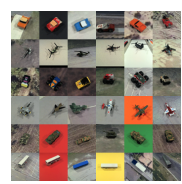

|
Visual Interaction with Deep Learning Models through Collaborative Semantic Inference
Gehrmann S, Strobelt H, Krueger R, Pfister H, and Alexander M. Rush.
InfoVis 2019
pdf
code
|

|
Torch-Struct: Deep Structured Prediction Library
Alexander Rush.
ACL Demos 2020 (Best Demo Honorable Mention)
pdf
|

|
exBERT - Visual Analysis of Transformer Models
Torch-Struct: Deep Structured Prediction Library
Benjamin Hoover, Hendrik Strobelt, Sebastian Gehrmann.
ACL Demos 2020
site
|

|
Posterior Control of Blackbox Generation
Xiang Lisa Li, Alexander M. Rush.
ACL 2020
pdf
|

|
What is Learned in Visually Grounded Neural Syntax Acquisition
Noriyuki Kojima, Hadar Averbuch-Elor, Alexander M. Rush, Yoav Artzi.
ACL 2020 (Short)
pdf
|
|

|
On the Capability of Neural Networks to Generalize to Unseen Category-Pose Combinations
Spandan Madan, Timothy Henry, Jamell Dozier, Helen Ho, Nishchal Bhandari, Tomotake Sasaki, Frédo Durand, Hanspeter Pfister, Xavier Boix
NeurIPS Submission
pdf
|